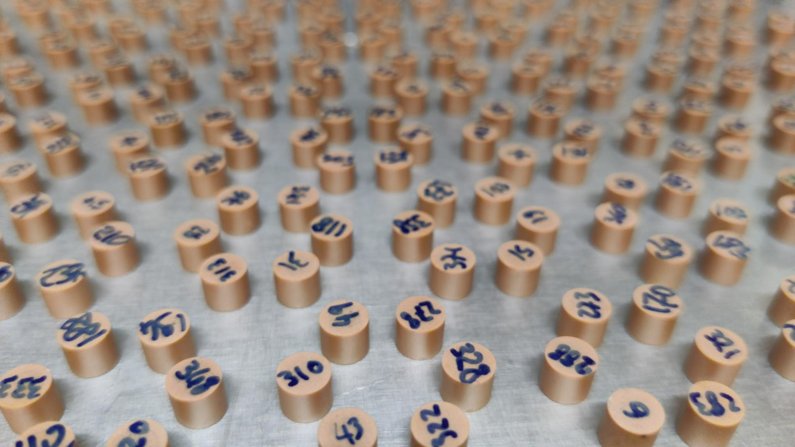

Personal page of Pierre Wulles
Home
English
On this page, you will find content related to my research work at LPMMC, my teaching at UGA, and more broadly related to physics or computer science.
Here is a link to my GitLab: starcluster
Français
Sur cette page vous trouverez des contenus relatifs à mes travaux de recherche au LPMMC, à mon enseignement à l'UGA et plus largement concernant la physique ou l'informatique.
Voici un lien vers mon gitlab: starcluster

Teaching
Algorithmique et programmation fonctionelle inf201
Quelques liens qui peuvent être utiles:
- OcamlPro pour utiliser OCaml en ligne
- Doc d'OCaml la bible sur OCaml, exhaustif mais parfois un peu ardue (anglais)
- Cours d'informatique qui suit le programme d'inf201 (français)
Annales 2024
Annales 2023
Annales 2022
Talks
Slides of talks I have given:
2023
Research
Introduction
English
My research focuses on networks of point-like scatterers, specifically on honeycomb networks in two dimensions. I study the transition towards disordered systems using topological markers such as the Chern number. I use numerous numerical simulations to study these systems.
These research works are theoretical, but they may have practical applications in various fields such as photonics and acoustics.
Français
Mes recherches portent sur les réseaux de diffuseurs ponctuels, plus spécifiquement sur les réseaux en nid d'abeille en deux dimensions. J'étudie la transition vers les systèmes désordonnés à l'aide de marqueurs topologiques tels que le nombre de Chern. J'ai recours à de nombreuses simulations numériques pour étudier ces systèmes.
Ces recherches sont théoriques, mais elles peuvent avoir des applications pratiques dans différents domaines tels que la photonique et l'acoustique.
CV
PDF version here with detailed bibliography
Personal Information
- Name: Pierre Wulles
- Title: Phd Student
- Address: LPMMC, CNRS and Université Grenoble Alpes, 38000 Grenoble, France
- Email: pierre.wulles at lpmmc.cnrs.fr
- Gitlab: https://gitlab.com/starcluster